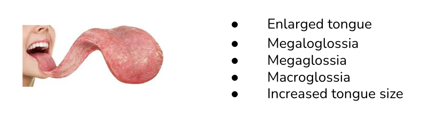

An Introduction to Synonyms in OBO Ontologies
An Introduction to Synonyms in OBO Ontologies¶
Authors:
Last update: 25.04.2024
In this lesson, we will discuss:
- Definitions and basic concepts around synonyms
- The importance of accurate curation of synonyms
- The OBO model for synonym representation
- A brief outlook on validation
Overview¶
Over time, different scientific communities have developed widely divergent terminologies for describing the same things. For example, "Varicella" and "Chickenpox" both refer to the same real-world condition. Or magroglossia can be described as enlarged tongue, megaglossia, etc.

To understand if different scientific resources such as a biological database, a scientific publication or an ontology talk about the same thing, we need to recognise if the expression they are using refers to the same real-world concept (have the same meaning).
The primary role of an ontology is to provide an explicit conceptualisation of a domain. However, ontologies especially in the biomedical domain have become much more than just that: for example, they encode hierarchical structures (taxonomies), provide formal definitions for terms (terminologies) and provide synonyms for terminological disambiguation (thesaurus).
Synonyms can have different levels of precision (e.g. exact, broad, related) and be used for different purposes (laypersons, acronyms, language translations). The variety of synonym types makes them difficult to curate and use.
This lesson is aimed at ontology curators, data analysts and tool developers to understand how to accurately curate and use synonyms provided by OBO ontologies.
Prerequisites¶
- Basic understanding of ontologies.
- Basic understanding of structured data.
Preparation¶
None.
What is delivered as part of the course¶
- A basic understanding of the core concepts around synonyms.
- A clear understanding of synonym properties and synonym types.
- Rules to curate and use synonym properties and synonym types correctly.
Table of contents¶
Introduction and examples¶
Duration: 10 min
What is a synonym?¶
Definition of synonym, Merrian Webster
Synonym: one of two or more words or expressions of the same language that have the same or nearly the same meaning in some or all senses (https://www.merriam-webster.com/dictionary/synonym)
Synonyms provide linguistic variety and help clarify meaning by offering alternative expressions with similar or identical meanings.
In the medical or clinical domain, synonyms are particularly valuable for ensuring that different terminologies used by various healthcare professionals and patients refer to the same conditions or treatments. This is crucial for effective communication, accurate diagnosis, and comprehensive patient care.
-
Acute Myocardial Infarction:
- Synonyms: Heart Attack, MI
- Context: "Acute Myocardial Infarction" is the clinical term for what is commonly known as a "heart attack." Using both terms can help ensure clarity in patient communications as well as in medical documentation.
- Note: Cardiac arrest, also known as sudden cardiac arrest, is when the heart stops beating suddenly. It's not the same as a heart attack. Reference
-
Hypertension:
- Synonyms: High Blood Pressure
- Context: "Hypertension" is often used interchangeably with "High Blood Pressure." While "hypertension" is commonly used in clinical settings, "high blood pressure" is more frequently used in patient education and public health communications.
-
Cerebrovascular Accident:
- Synonyms: Stroke, Brain Attack
- Context: A "Cerebrovascular Accident," often referred to simply as a "stroke," is sometimes also called a "brain attack" in educational materials to emphasize its urgency and nature, similar to a heart attack.
-
Varicella:
- Synonyms: Chickenpox
- Context: "Varicella" is the medical term for "chickenpox," a common childhood illness. Using both terms helps in making literature accessible to both medical professionals and the general public.
These examples illustrate how synonyms in the clinical domain facilitate effective communication across different levels of medical expertise and lay understanding, enhancing the clarity and efficacy of healthcare delivery.
Are all synonyms exact? No. Here is why.¶
Not all synonyms should be considered exact synonyms because subtle variations in meaning, context, and usage can lead to significant differences in interpretation, particularly in domains where precision is critical, such as in clinical or medical settings. Recognizing synonyms as related, broad, or narrow helps clarify their specific meanings and applications, ensuring more accurate communication and appropriate usage.
-
Precision in Diagnosis and Treatment: In the clinical domain, the precise understanding of terminology can directly affect diagnosis and treatment decisions. Misinterpretations due to synonym confusion can lead to incorrect treatment plans and potentially harmful outcomes.
-
Effective Communication: Health professionals often communicate with a diverse team, including other clinicians, researchers, nurses, and patients. Clear distinctions among synonym types ensure that all parties have a correct understanding of the condition or treatment discussed.
-
Medical Documentation and Coding: Medical records, billing, and coding rely heavily on precise terminology. Using the correct synonym in the right context is crucial for accurate record-keeping and insurance processing.
Let's look at some examples from the clinical domain:
-
Myocardial Infarction vs. Heart Attack:
- Myocardial Infarction (Exact): A medical term used to describe the interruption of blood supply to a part of the heart, causing heart cells to die. This term is used in clinical diagnostics and documentation.
- Heart Attack (Broad): Commonly used to describe any critical heart-related event by the general public. It is broader and might not always refer to myocardial infarction specifically. A heart attack is when blood flow to the heart is blocked. Sudden cardiac arrest is when the heart malfunctions and suddenly stops beating. A heart attack is a “circulation” problem and sudden cardiac arrest is an “electrical” problem. Reference
-
Osteoarthritis vs. Arthritis:
- Osteoarthritis (Narrow): A type of arthritis that occurs when flexible tissue at the ends of bones wears down.
- Arthritis (Broad): A general term used to refer to conditions involving pain and inflammation in joints. It includes over 100 different types of joint diseases, making it a broader term than osteoarthritis.
-
Seizure vs. Epilepsy:
- Seizure (Related): A single medical event that involves abnormal electrical activity in the brain, which can manifest as convulsions, minor physical signs, thought disturbances, or a combination of symptoms.
- Epilepsy (Broad): A chronic disorder characterized by unprovoked, recurrent seizures. Epilepsy implies a condition with broader implications than a single seizure event.
-
Tumor vs. Cancer:
- Tumor (Related): An abnormal lump or growth of tissue, which can be benign or malignant.
- Cancer (Broad): A broad term for diseases involving abnormal cell growth with the potential to invade or spread to other parts of the body. Not all tumors are cancerous (e.g., benign tumors).
Cancer vs Malignant Tumor
In Mondo, malignant tumor, malignant neoplasm, malignancy are synonyms for cancer. Mondo follows the National Cancer Institute Thesaurus (NCIT), which uses 'Malignant Neoplasm' as the primary label (and cancer is a synonym). this may differ in other disease terminologies.
Distinguishing between exact, broad, narrow, and related synonyms in the clinical domain is essential for maintaining the high standards of precision and care required in medical practice. This nuanced understanding aids in better patient outcomes, more effective communication among healthcare providers, and precise medical documentation.
How are synonyms usually shared and curated?¶
Synonyms are commonly shared in many different ways. Here are a few that are widely used:
Thesauri
Definition: A thesaurus is a structured vocabulary of controlled terms that includes synonyms and antonyms (opposites), and often, hierarchical (broader and narrower) relationships among the terms.
Example: The Art & Architecture Thesaurus (AAT) is widely used in cultural heritage and museum documentation to standardize terminology related to art, architecture, and material culture.
Synonym Rings
Definition: Synonym rings group terms that are considered synonymous in a particular context, without specifying a preferred term. This is useful in information retrieval systems where different users may use different terms to mean the same thing.
Example: Many search engines internally use synonym rings to expand search queries to include various terms that users might use interchangeably.
Ontologies
Definition: Ontologies provide a formal representation of knowledge as a set of concepts within a domain, along with the relationships between those concepts. They can include synonym information to ensure that abstract concepts/classes can be understood and recognised across domains.
Example: The Gene Ontology (GO) is an ontology widely used in the bioinformatics community to unify the representation of gene and gene product attributes across species and databases.
Taxonomies
Definition: Taxonomies classify information into ordered categories or classes. While not primarily focused on synonyms, they often include them to help map similar categories across different systems.
Example: The Linnaean taxonomy used in biology classifies living organisms but also aligns various synonymous names that have been historically used for the same species.
Controlled Vocabularies
Definition: A controlled vocabulary is an organized arrangement of words and phrases used to index content and/or to retrieve content through browsing or searching. It typically includes synonyms to ensure that different terms that mean the same thing lead to the same content.
Example: Medical Subject Headings (MeSH) is used in many biomedical indexes and databases. It includes a wide array of synonyms for medical terms to ensure comprehensive search coverage.
Lexical Databases
Definition: Lexical databases store information about words, including definitions, synonyms, antonyms, and relationships between words.
Example: WordNet, a lexical database for the English language, provides sets of cognitive synonyms (synsets), each expressing a distinct concept. Synsets are interlinked by conceptual-semantic and lexical relations.
Why are synonyms so important?¶
Synonyms are hugely important for many use cases in the information and data domains. Here are some examples:
-
Database curation:
- Use Case: Making it easier to identify the right ontology or vocabulary term during data curation.
- Benefit: Precise synonyms make it easier to recognise that a specific class in an ontology is "the right one" when curating a record in a database, especially if the term I most frequently use is one of the synonyms.
-
Integration of community-level terminological preferences:
- Use Case: Ontology classes can have a at maximum a single preferred label. This can be frustrating when two different communities use different terminologies for the same concepts. Using synonyms we have the choice of favoring one community for the primary label, and another for the synonym; or using neutral terminology for the label, and making each community's preferred term a synonym. Optionally, the synonyms can be marked up using axioms to indicate they are preferred for that community, and some tools can then render that as the primary label in given contexts.
- Benefit: Scientific communities evolved across a spectrum of disciplines and geographical locations. Many have divergent terminological preferences, for example, ClinGen prefers, in some cases, to explicitly include gene symbols as part of a disease name, while other organisation prefer to use other forms of naming. Synonyms are a great way to record such community-level preferences linked to a common disease concept. This enables a pluralistic, more inclusive approach to ontology development involving many different communities.
-
Natural Language Processing (NLP):
- Use Case: Improving the accuracy of speech recognition systems, chatbots, and AI assistants. Synonyms help these systems understand and process human language more effectively by mapping different words to the same meanings.
- Benefit: Enhances the user experience by allowing more flexible, conversational interactions with technology using varied vocabulary, thus making AI interactions seem more natural and less constrained by specific word choices. In our domain, this is particularly important when automatically extracting data and knowledge from unstructured sources such as scientific articles, for example into a knowledge graph.
-
Database Search:
- Use Case: Enhancing the capability of database queries to return relevant results even when search terms use different terminology from that stored in the database. This is particularly important in fields like healthcare, legal, and academic databases where diverse terminologies are common.
- Benefit: Users can find relevant information even if they don't know the exact terminology used in the database, reducing search time and improving the usability of information systems. Many databases in the biomedical domain employ synonyms for more accurate discovery of information.
-
Automated Ontology and Knowledge Graph Matching:
- Use Case: Frequently, we have to align different ontologies, KGs or controlled vocabularies. A new buzzword (promoted as far as we can see by a business that wants to sell the service) is "entity resolved knowledge graphs" - KGs in which all records/terms that mean the same thing resolve to the same graph entity. This is, for many of us of course, our daily bread and butter. Synonyms are critical features of terms needed for entity resolution and ontology matching.
- Benefits: By matching on exact synonyms, we can easily determine if two terms are equivalent.
Info
The importance of explicitly curated synonyms may become a little less obvious in the age of LLMs, where synonyms are naturally represented in some magic place called "latent space", which makes it possible for chatbots to understand if two expressions refer to the same real world entity. However, LLMs are far from perfect at reflecting specialised scientific synonymy and are still prone to hallucination in 2024. For scenarios where accuracy and provenance (who says this is a synonym?) is important, structured sources for synonymy are key.
The OBO model for synonyms¶
Duration: 25 min
OBO modeling and synonyms¶
All standardised metadata properties promoted by the OBO Foundry included in the OBO Metadata Ontology (OMO).
There are two hierarchies of synonym types of particular relevance to synonym representation:
For the main part of the course, please study the following to reference guides.
Basic overview of validation¶
Duration: 5 min
Goals of this section:
- Basic considerations for validation
- Materials
- Basic validation with ROBOT
report - Advanced validation with custom
SPARQLqueries
- Basic validation with ROBOT